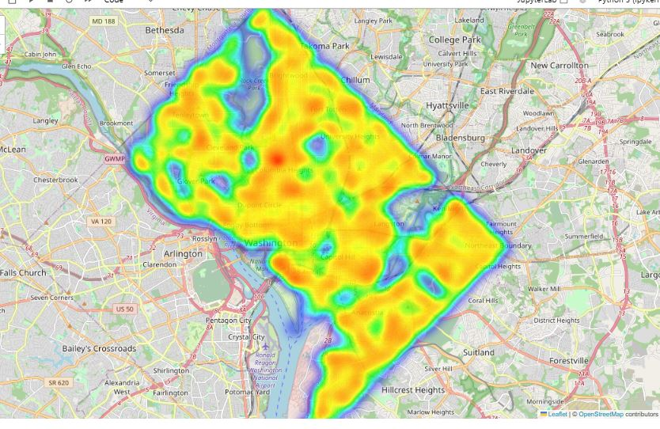
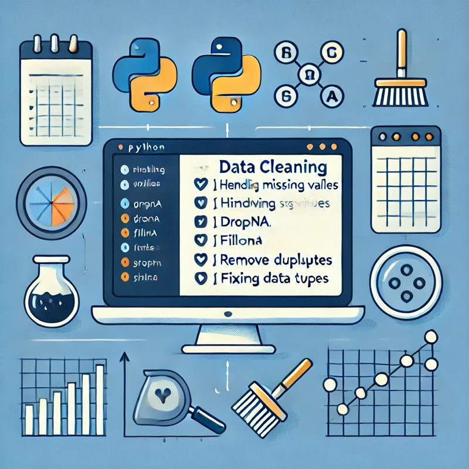

This project analyzes and visualizes crime patterns using Python, focusing on spatial distribution and crime trends. It employs Kernel Density Estimation (KDE) to generate crime hotspot maps, identifying high-risk areas. The analysis includes charts based on crime shifts (day, evening, night) and crime methods (gun, others) to uncover temporal and methodological crime trends.
The visualization provides insights for law enforcement and urban safety planning.

I specialize in preprocessing and cleaning datasets using Python's robust libraries, susch as Pandas and Numpy, which turn raw data into useful insights. Messy data leads to misleading results



Exploration Data Analysis is the key to unlock patterns, trends and useful insights in raw data, Using python's pandas, seaborn and matplotlib, i transformed this datasets into meaningful visualization and Statistics.

This project is a real-time cryptocurrency data tracker that fetches the latest market data from the CoinMarketCap API and processes it using Python, Pandas, and Seaborn for analysis and visualization. The system retrieves cryptocurrency price updates, percentage changes over different time frames (1h, 24h, 7d, 30d, 60d, 90d), and timestamps, making it useful for tracking market trends.
Features:
API Integration: Fetching real-time cryptocurrency data using CoinMarketCap’s API.
Data Processing: Normalizing and structuring JSON API responses into a Pandas DataFrame.
Automated Data Collection: Running the API call in a loop to store historical price data.
Data Visualization: Using Seaborn and Matplotlib to generate trend analysis graphs.
CSV Storage & Retrieval: Storing fetched data in CSV format for later use.
This project showcases proficiency in API handling, data manipulation, and financial data analysis, making it ideal for anyone interested in fintech, market analysis, or data-driven applications.

This project analyzes ice cream ratings based on three key factors: flavor rating, texture rating, and overall rating. Using the Pandas library, the dataset is processed to show charts and identify trends. Matplotlib are used to visualize the relationships between flavor, texture, and overall satisfaction, providing insights into consumer preferences.

This project extracts and analyzes data on the largest U.S. companies by revenue using web scraping in Python. The script utilizes BeautifulSoup and Requests to fetch company names, revenue figures, and industry details from a financial website. The data is then processed using Pandas for cleaning and analysis. Matplotlib and Seaborn are used to visualize revenue distributions and industry trends.